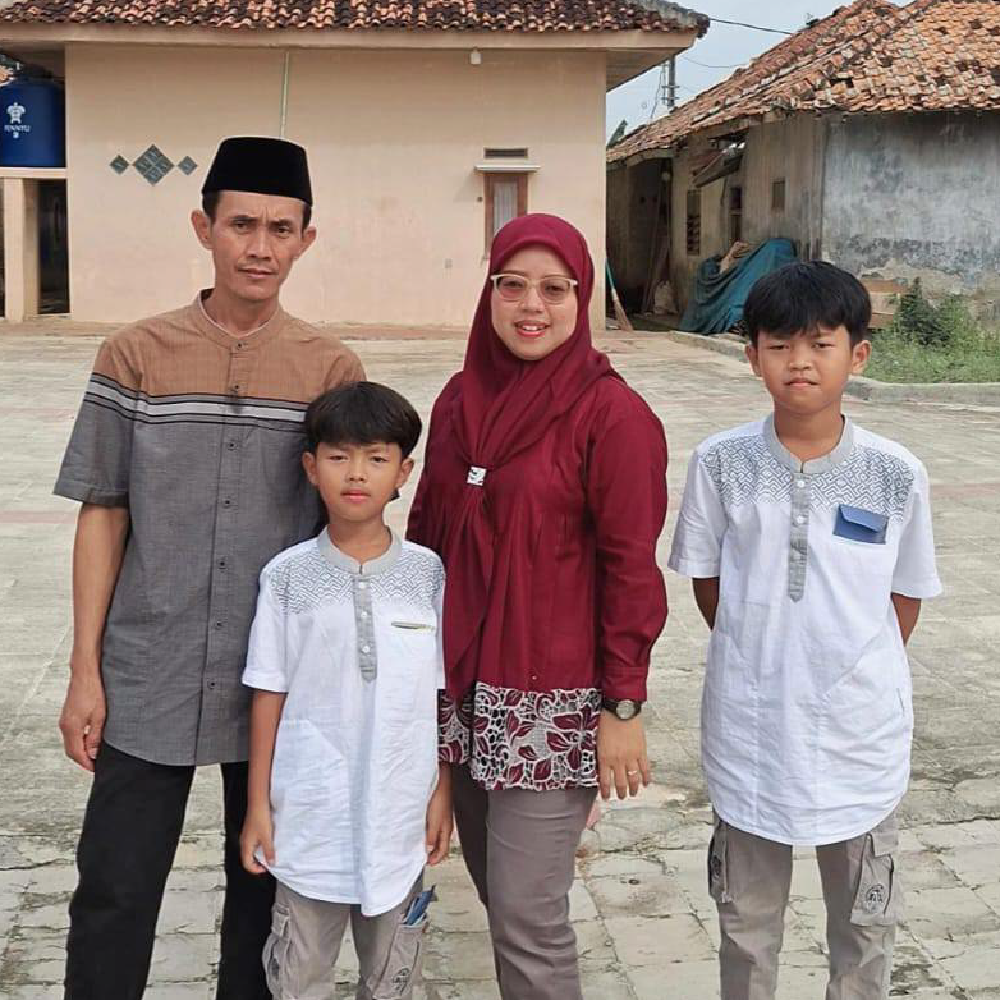

<!DOCTYPE html>
<html lang="id">
  <head>
    <meta charset="UTF-8" />
    <meta name="viewport" content="width=device-width, initial-scale=1.0" />
    <title>About Us - Akmal Bakery</title>
    <script src="https://cdn.tailwindcss.com"></script>
    <link href="./dist/output.css" rel="stylesheet" />
    <style>
      @import url("https://fonts.googleapis.com/css2?family=Great+Vibes&display=swap");
      html,
      body {
        height: 100%;
        margin: 0;
      }
      body {
        display: flex;
        justify-content: center;
        align-items: center;
        background: #000; /* background hitam di luar 16:9 */
      }
      .screen-16-9 {
        aspect-ratio: 16 / 9;
        width: 100%;
        height: 100%;
        max-height: 100vh;
        max-width: 100vw;
        background: white;
        overflow: hidden;
        display: flex;
        flex-direction: column;
      }
      main {
        flex: 1;
        overflow: auto;
      }
    </style>
  </head>
  <body>
    <div class="screen-16-9">
      <!-- HEADER -->
      <header class="bg-white shadow relative">
        <div
          class="max-w-7xl mx-auto px-6 py-4 flex items-center justify-between"
        >
          <!-- Left Menu -->
          <nav class="flex items-center gap-8 font-bold text-sm">
            <a href="index.html" class="text-yellow-600">HOME</a>
            <div class="relative">
              <button
                onclick="toggleDropdown('aboutDropdown')"
                class="flex items-center gap-1 hover:text-yellow-600"
              >
                ABOUT US <i class="fas fa-chevron-down text-xs"></i>
              </button>
              <div
                id="aboutDropdown"
                class="hidden absolute bg-white shadow-lg rounded-md mt-2 w-40"
              >
                <a
                  href="about_sejarah.html"
                  class="block px-4 py-2 hover:bg-yellow-100"
                  >Sejarah</a
                >
                <a
                  href="about_profile.html"
                  class="block px-4 py-2 hover:bg-yellow-100"
                  >Profile</a
                >
              </div>
            </div>
            <a href="product.html" class="hover:text-yellow-600">PRODUCT</a>
          </nav>

          <!-- Logo Center -->
          <div class="absolute left-1/2 transform -translate-x-1/2">
            <a href="index.html">
              
            </a>
          </div>

          <!-- Right Menu -->
          <nav class="flex items-center gap-8 font-bold text-sm relative">
            <a href="lokasi.html" class="hover:text-yellow-600">LOKASI</a>
            <div class="relative">
              <button
                onclick="toggleDropdown('kontakDropdown')"
                class="flex items-center gap-1 hover:text-yellow-600"
              >
                KONTAK <i class="fas fa-chevron-down text-xs"></i>
              </button>
              <div
                id="kontakDropdown"
                class="hidden absolute bg-white shadow-lg rounded-md mt-2 w-40"
              >
                <a
                  href="https://api.whatsapp.com/send/?phone=6285159951207&text&type=phone_number&app_absent=0"
                  target="_blank"
                  class="flex items-center gap-2 px-4 py-2 hover:bg-yellow-100"
                >
                  <i class="fab fa-whatsapp text-green-500"></i> WhatsApp
                </a>
                <a
                  href="https://www.facebook.com/akmal.bkry"
                  target="_blank"
                  class="flex items-center gap-2 px-4 py-2 hover:bg-yellow-100"
                >
                  <i class="fab fa-facebook text-blue-600"></i> Facebook
                </a>
                <a
                  href="https://maps.app.goo.gl/nqqEuFVbhXzS5Egw6"
                  target="_blank"
                  class="flex items-center gap-2 px-4 py-2 hover:bg-yellow-100"
                >
                  <i class="fas fa-map-marker-alt text-red-500"></i> Maps
                </a>
              </div>
            </div>
            <a href="news.html" class="hover:text-yellow-600">NEWS & PROMO</a>
          </nav>
        </div>
      </header>

      <!-- MAIN CONTENT -->
      <main>
        <section class="bg-[#fffdd0] text-center py-6">
          <h2 class="text-2xl font-bold">KISAH KAMI</h2>
          <p class="mt-2 font-semibold">
            TOKO KUE AKMAL BAKERY YANG MENYAJIKAN PILIHAN KUE YANG ENAK ENAK
          </p>
        </section>

        <section
          class="max-w-7xl mx-auto px-6 py-6 grid grid-cols-1 lg:grid-cols-2 gap-6"
        >
          <div class="flex justify-center">
            
          </div>
          <div class="text-center lg:text-left">
            <h3 class="text-lg font-bold">Sejarah Akmal Bakery</h3>
            <p class="mt-4 text-sm leading-relaxed">
              Akmal Bakery didirikan oleh Iis Nuriyat, S.E.Sy pada awal tahun
              2017. Berawal dari keinginan memperbaiki perekonomian keluarga dan
              memanfaatkan keahlian membuat kue di dapur, usaha ini lahir dari
              kesederhanaan sebuah langkah. Pada awalnya, beliau hanya mencoba
              membuat kue rumahan sebanyak 12-14 loyang, kemudian menjualnya ke
              tetangga dan masyarakat sekitar.
              <br /><br />
              Dari situ, kue-kue buatannya mulai dikenal oleh masyarakat sekitar
              karena rasanya yang enak dan khas. Permintaan pun meningkat dari
              minggu ke minggu hingga berbagai jenis kue lahir dalam setiap
              produksi. Dengan tekad dan semangat, usaha ini terus berkembang
              hingga akhirnya diputuskan untuk membuka toko kue di Pasar Ampera.
              Kini, Akmal Bakery tetap mempertahankan kualitas rasa dan
              pelayanan yang ramah.
              <br /><br />
              Seiring waktu, produk Akmal Bakery semakin meluas dan diminati.
              Akhirnya diputuskan untuk membuka toko kue sik di salah satu pasar
              di Ampera. Dari yang sebelumnya sistem delivery order, kini
              konsumen bisa langsung datang ke toko. Hingga tahun 2025, Akmal
              Bakery terus berkembang dengan mempertahankan kualitas rasa dan
              pelayanan yang ramah.
            </p>
          </div>
        </section>
      </main>

      <!-- FOOTER -->
      <footer class="bg-[#4b2c20] text-white text-center md:text-left py-4">
        <div
          class="max-w-7xl mx-auto grid grid-cols-1 md:grid-cols-3 gap-6 px-6"
        >
          <div>
            <h3 class="font-bold text-lg">TOKO</h3>
            <p class="mt-2">
              Pasar Ampera Tanjungsari Barat<br />Kecamatan Cikaum Kabupaten
              Subang
            </p>
          </div>
          <div>
            <h3 class="font-bold text-lg">ALAMAT</h3>
            <p class="mt-2">
              Dusun Krajan 1 Desa Tanjung Sari Timur<br />Kecamatan Cikaum
              Kabupaten Subang
            </p>
          </div>
          <div>
            <h3 class="font-bold text-lg">KONTAK</h3>
            <div
              class="flex justify-center md:justify-start gap-4 mt-3 text-2xl"
            >
              <a href="#" class="hover:text-green-500"
                ><i class="fab fa-whatsapp"></i
              ></a>
              <a href="#" class="hover:text-blue-600"
                ><i class="fab fa-facebook"></i
              ></a>
              <a href="#" class="hover:text-pink-500"
                ><i class="fab fa-instagram"></i
              ></a>
            </div>
          </div>
        </div>
        <p class="mt-4 text-end text-sm mr-6">©2025 Powered by Akmal Bakery</p>
      </footer>
    </div>

    <script>
      function toggleDropdown(id) {
        document.querySelectorAll('[id$="Dropdown"]').forEach((drop) => {
          if (drop.id !== id) drop.classList.add("hidden");
        });
        document.getElementById(id).classList.toggle("hidden");
      }
      document.addEventListener("click", (e) => {
        if (!e.target.closest(".relative")) {
          document
            .querySelectorAll('[id$="Dropdown"]')
            .forEach((drop) => drop.classList.add("hidden"));
        }
      });
    </script>
    <script
      src="https://cdnjs.cloudflare.com/ajax/libs/font-awesome/6.4.0/js/all.min.js"
      crossorigin="anonymous"
    ></script>
  </body>
</html>
